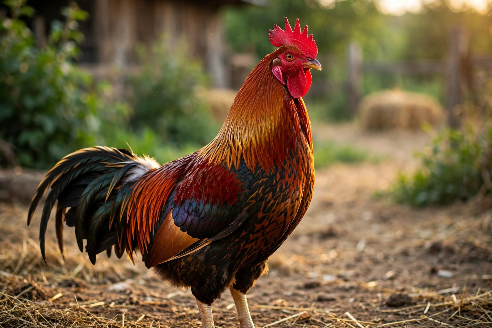

Crianza, cuido y selección de aves de combate con tradición, disciplina y cuidado veterinario profesional.


Del nido a la valla: acompañamiento completo.
Selección de líneas finas y crianza controlada desde el nacimiento.
Programas de cuido, alimentación y preparación física a medida.
Ejemplares seleccionados, sanos y listos, con garantía veterinaria.
Vacunación, desparasitación y tratamiento especializado en aves de combate.
Nuestros ejemplares, fotos de nuestro equipo.
Cargando galería…
Escríbenos y te mostramos los ejemplares disponibles.
Escríbenos por WhatsApp